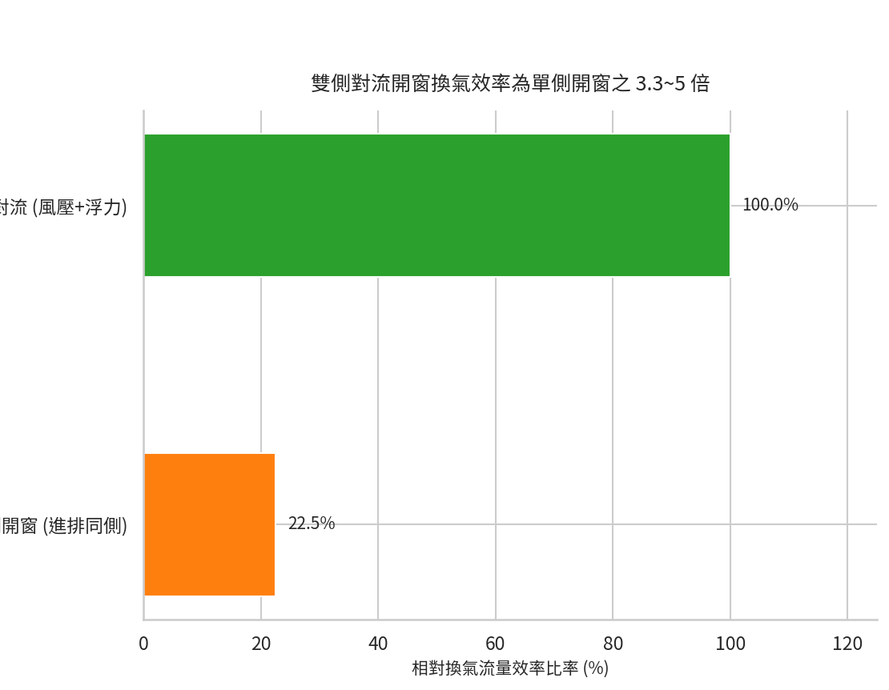
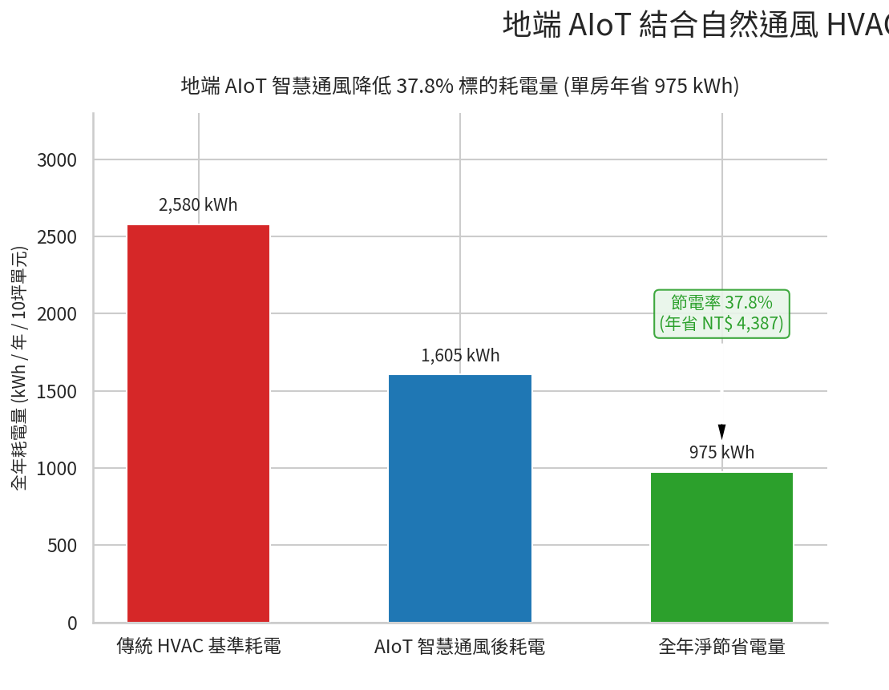
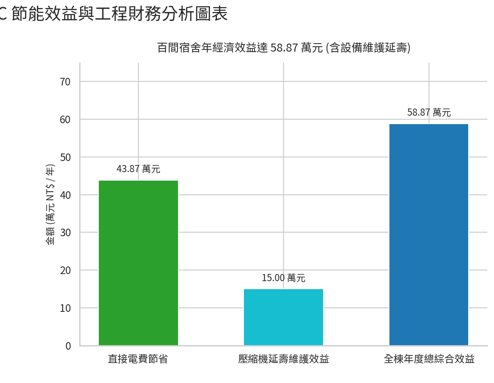
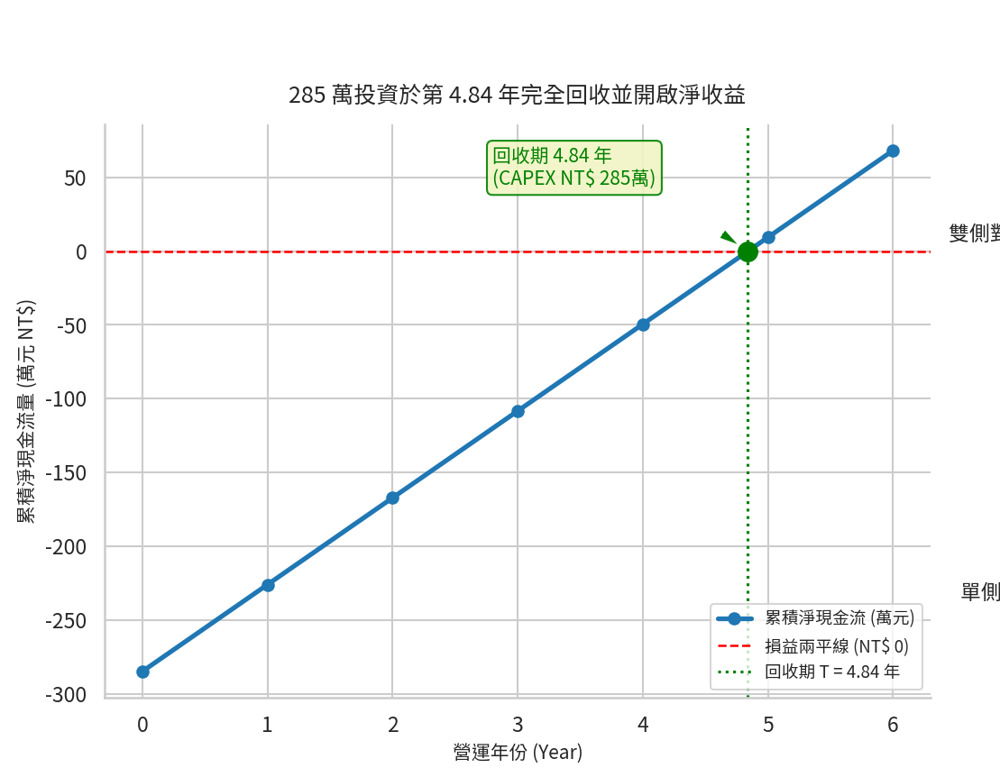

1. 核心重點摘要與研究目的
1.1 研究背景與核心理念
在極端氣候與 ESG 永續轉型的雙重趨勢下，建築能耗（特別是暖通空調 HVAC 系統）占據住宅、宿舍與公共建築總用電量的極高比例。本報告之核心理念在於「利用自然恩賜的資源（外氣、風壓、煙囪效應），結合建築物理之自然通風原理，並透過地端 AIoT (Artificial Intelligence of Things) 邊緣控制系統，動態整合 IO 控制之電動自動窗、變頻冷暖氣機與獨立除濕機，實現兼具節能減碳與健康舒適 (IAQ) 之智慧建築控制。
1.2 系統綜合量化成果總覽
- 熱舒適最佳化：結合動態 PMV (Predicted Mean Vote) 指標與微風速控制（$0.2 \sim 0.5\text{ m/s}$），於春秋季實現 100% 自然通風。
- 操作最簡化：地端 AI 自動切換通風、獨立除濕與變頻冷氣模式，具備手動優先保護機制與 3 秒內防雨、防空汙強制閉窗機制。
- 省電極致化：夏季夜間預冷（Night Purge）結合外氣熱焓值循環（Economizer Cycle），使單一 10 坪空間單元每年節省電力 $975\text{ kWh}$（節電率達 $37.8\%$），直接省下 $\text{NT\$ } 4,387 / \text{年}$，減碳 $459.2\text{ kg CO}_2\text{e/年}$（相當於種植 38.3 棵樹）。
- $\Delta P_w$：風壓差 ($\text{Pa}$)
- $C_p$：風壓係數 (無因次)
- $\rho$：空氣密度 ($\text{kg/m}^3$)
- $V_{\text{wind}}$：平均風速 ($\text{m/s}$)
- $Q_{\text{wind}}$：風壓通風量 ($\text{m}^3/\text{s}$)
- $C_v$：開口有效風向係數（垂直迎風取 $0.5 \sim 0.6$，斜向迎風取 $0.25 \sim 0.35$）
- $A$：迎風開口有效面積 ($\text{m}^2$)
- $Q_{\text{stack}}$：熱浮力通風量 ($\text{m}^3\text{/s}$)
- $C_d$：開口流量係數 (銳邊開口取 $0.65$，一般開口取 $0.60$)
- $A$：有效通風開口面積 ($\text{m}^2$)
- $g$：重力加速度 ($9.81\text{ m/s}^2$)
- $H$：進排風口中心高程差 ($\text{m}$)
- $T_{\text{in}}, T_{\text{out}}$：室內外絕對溫度 ($\text{K}$)
- 溫濕與焓值邊界：適宜邊界為室外溫度 $20^\circ\text{C} \le T_{\text{out}} \le 27^\circ\text{C}$、相對濕度 $RH_{\text{out}} \le 75\%$，且室外空氣熱焓值 $h_{\text{out}} < h_{\text{in}}$。
- 空氣品質關斷：當室外 $\text{PM}_{2.5} > 35\ \mu\text{g/m}^3$ 或偵測到異味濃煙時關閉自動窗，切換為具備濾網之新風或內循環系統。
- 緊急關斷條件：強風 ($V_{\text{wind}} > 5\text{ m/s}$)、強雨、濃煙、有機/化學惡臭。
- 環境噪音防護：依據環境部《噪音管制標準》，住宅與宿舍區夜間（22:00~06:00）第一、二類管制區標準為 $50 \sim 55\text{ dBA}$。夜間若周邊環境噪音 $> 55\text{ dBA}$，限制自動窗最大開度於 $15\%$，以兼顧通風降溫與隔音安寧。
- 建築結構與對流條件限制：單側開窗 (Single-sided) 效能僅為雙側貫穿通風 (Cross Ventilation) 之 $20\% \sim 30\%$。單側開窗單元需搭配氣窗、門百葉或天井煙囪道方能達到動態通風預期效益。
- 一般住宅：適用性高（極度推薦採用混合通風）。春秋季開窗穿堂風，夏季切換 DX 變頻分離式空調。
- 學校與企業宿舍：適用性中高（適合時程管制混合通風）。宿舍格局模組化且行為規律，日間外出時開窗排熱，夜間回房先通風降溫再開空調，大幅降低營運成本。
- 安養中心：適用性中（需嚴格限制純自然通風，高度依賴智慧混合通風 + ERV）。長者對風速與溫濕波動敏感，過度直吹易感冒，吹向人體風速需控制於 $0.15 \sim 0.3\text{ m/s}$，並以全熱交換器 (ERV) 輔助過濾外氣。
- 公共圖書館與展覽館：適用性高（高天井熱煙囪混合通風）。如某圖書館，利用高天井熱煙囪與深陽台遮陽，結合 BMS 動態切換。
- 第 5 層：AI 決策層 (地端 PC / Python 邏輯腳本)：即時運算焓值 $h$、PMV 指標與最佳節能模式。
- 第 4 層：EBMS 管理層 (地端 Grafana 能源看板)：監控全樓用電趨勢、電費與碳排放量，防範超越台電契約容量。
- 第 3 層：BMS 控制層 (地端 PLC / Docker 中控平台)：作為執行手腳，確保開窗、切換冷氣等連動動作 100% 安定執行。
- 第 2 層：AIoT 邊緣層 (ESP32 / 工業級 Edge Gateway)：擔任現地傳話官，進行訊號流控轉換，斷網亦可執行硬體保護。
- 第 1 層：IoT 現地層 (RS-485 氣象站、IAQ 感測器、24V DC 電動推桿窗)：提供高精度實體環境數據與堅固的機械執行力。
- $h$：空氣焓值 ($\text{kJ/kg}$)
- $T$：乾球溫度 ($^\circ\text{C}$)
- $w$：含濕量 ($\text kg_w/kg_{da}$)
- 模式 A（自然通風模式）：$P_{\text{rain}} = \text{OFF}$ 且 $V_{\text{wind}} < 5\text{ m/s}$ 且 $\text{PM}_{2.5} < 35\ \mu\text{g/m}^3$ 且 $h_{\text{out}} < h_{\text{in}}$ 且 $20^\circ\text{C} \le T_{\text{out}} \le 27^\circ\text{C}$。自動窗開啟，冷氣與除濕機關閉。
- 模式 B（獨立除濕模式）：$22^\circ\text{C} \le T_{\text{in}} \le 26^\circ\text{C}$，但 $RH_{\text{in}} > 65\%$ 且 $RH_{\text{out}} > 80\%$ 或 $P_{\text{rain}} = \text{ON}$。自動窗關閉，啟動除濕機，冷氣機關閉。
- 模式 C（冷氣空調模式）：$T_{\text{in}} > 28^\circ\text{C}$ 且 $h_{\text{out}} > h_{\text{in}}$。自動窗強制關閉，除濕機關閉，啟動變頻冷氣機。
- 模式 D（夜間預冷 Night Purge 模式）：夏季夜間（22:00~06:00），當 $T_{\text{out}} < T_{\text{in}}$ 且 $T_{\text{out}} \ge 18^\circ\text{C}$，且戶外噪音 $< 55\text{ dBA}$。自動窗開啟低速通風，帶走建築熱量。
- 舒適最佳化：依據 ISO 7730 計算 PMV 值，優先以微風速 ($0.2 \sim 0.5\text{ m/s}$) 抵銷體感溫度。
- 操作最簡化：無感全自動切換三模式。手動切換優先暫停 AI 控制 2 小時；雨滴感測觸發 3 秒內強制關窗；電動窗阻力過載自動退回 5 公分防夾。
- 省電最極致化：比對焓值 $h_{\text{out}} < h_{\text{in}}$ 開啟全外氣通風，達成 100% 冰水/冷氣零耗能。夏季夜間預冷降低次日 $20\% \sim 30\%$ 初始冷氣負載。
- 情境 A：散戶單一住宅空間（CAPEX = NT$ 51,500）
- 純電費回收年限：$51,500 / 4,387 = \mathbf{11.74\text{ 年}}$
- 綜合效益回收年限：$51,500 / 5,887 = \mathbf{8.75\text{ 年}}$
- 情境 B：100 間宿舍集中採購案型（CAPEX = NT$ 28,500 / 間）
- 純電費回收年限：$28,500 / 4,387 = \mathbf{6.50\text{ 年}}$
- 綜合效益回收年限：$28,500 / 5,887 = \mathbf{4.84\text{ 年}}$
- 案情背景：某企業升級 100 間宿舍，總 CAPEX 為 $\text{NT\$ } 2,850,000$（含硬體、施工與相關規費每房 $\text{NT\$ } 2,500$）。
- 量化效益與評估：全棟年節電 $97.5\text{ MWh/年}$，直接省下電費 $\text{NT\$ } 438,700 / \text{年}$；全棟年減碳 $45.92\text{ 公噸 CO}_2\text{e/年}$，可直接計入公司 ESG 永續報告書；結合冷氣延壽維護每年 $\text{NT\$ } 15\text{ 萬}$ 效益，綜合年效益達 $\text{NT\$ } 58.87\text{ 萬}$，總投資於 4.84 年完全回收。
- 技術可行性高：地端 AIoT + BMS 邊緣架構結合 Modbus / IO 乾接點控制，安定性極高且具斷網自主保護能力。
- 環境與健康效益顯著：單一 10 坪單元每年節電 $975\text{ 度}$，減碳 $459.2\text{ kg CO}_2\text{e}$，室內 $\text{CO}_2$ 長期維持於 $800\text{ ppm}$ 以下。
- 投資回收期優異：集中採購案型計入建照變更與簽證規費後，綜合投資回收期僅 4.84 年，顯著低於設備壽命（8~10年），為極具吸引力之 ESG 綠建築改造方案。
- 中華民國經濟部能源署 - 住宅與商業建築節能設計與電力排碳係數
https://www.moeaea.gov.tw/ - ASHRAE Handbook—Fundamentals - Building Energy Estimating and Building Automation Systems
https://www.ashrae.org/technical-resources/ashrae-handbook - MDPI Energies - Investment Energy Efficiency Analysis for Smart Ventilation and BMS Integration
https://www.mdpi.com/1996-1073/19/5/1296 - GitHub Open Source HVAC & BMS Libraries - BAC0 & BACnet-Stack Resources
https://github.com/BACnet-Stack/BACnet-Stack - 環境部氣候變遷署與噪音管制標準
https://www.moenv.gov.tw/
2. 自然通風技術原理與物理機制
2.1 風壓驅動通風 (Wind-driven Ventilation)

圖 2.1：單側開窗與雙側貫穿對流（Cross Ventilation）之換氣效率對比（單側開窗換氣效率僅約雙側對流之 22.5%）。
利用建築外部迎風面與背風面所形成之風壓差 $\Delta P_w$，驅動室外新鮮空氣由進風開口流入，並從背風面開口排出：
風壓驅動通風量 $Q_{\text{wind}}$ 計算式如下：
2.2 熱浮力驅動通風 (Buoyancy-driven / Stack Effect)
利用室內外空氣溫差帶來的密度差，使熱空氣上升並由高位開口排出，冷空氣由低位開口補入。煙囪效應之熱浮力通風量 $Q_{\text{stack}}$ 計算式如下（引用自 ASHRAE Handbook—Fundamentals）：
2.3 混合通風模式 (Hybrid / Mixed-Mode Ventilation)
結合自然通風與機械空調/除濕系統，依據室內外熱濕環境動態切換各種組合模式：純自然通風模式、獨立除濕模式、全空調冷卻模式，確保在滿足體感舒適前提下優先使用自然能源。
3. 「條件性適用」邊界與環境限制評估
3.1 邊界與環境限制機制
自然通風之應用具備高度「環境條件依賴性」，地端 AIoT 控制系統必須優先進行條件檢查：
3.2 不同空間場所之適用性剖析
4. 地端 AIoT、IoT、AI、BMS 與 EBMS 五層架構與操作策略
4.1 系統架構與選用說明
本系統採用「地端私有化封閉架構」，完全不仰賴外網雲端，確保最高資安等級與斷網後安定運作。
4.2 控制參數定義與熱力學計算
1. 複合熱力學指標——濕空氣焓值 (Enthalpy) $h$ ($\text{kJ/kg}$)：
2. 複合熱舒適度指標——PMV (ISO 7730)：控制目標維持於 $-0.5 \le \text{PMV} \le +0.5$。
4.3 四大控制模式與門檻
4.4 三大核心最佳化操作策略
5. 12 個月用電量動態估算曲線與量化成果
以 10 坪宿舍/住宅空間單元為例（基準用電每年 5~10 月每天開冷氣 10 小時，額定功率 $1.2\text{ kW}$）：
5.1 12 個月用電量估算數據表 (kWh / 月)

圖 5.1：單一 10 坪空間單元 12 個月傳統用電與 AIoT 智慧通風節電趨勢對比（全年度節電達 37.8%）。
| 月份 | 氣候狀態與通風策略 | 無自然通風用電量 | 有自然通風 (AIoT) | 單月節電量 | 節電率 |
|---|---|---|---|---|---|
| 1月 | 冬季涼爽，中南部/北部日間開窗通風 | 30 | 10 | 20 | 66.7% |
| 2月 | 冬末早春，多數時段適合全外氣通風 | 30 | 10 | 20 | 66.7% |
| 3月 | 黃金通風月，氣溫宜人 ($20\sim24^\circ\text{C}$) | 80 | 15 | 65 | 81.3% |
| 4月 | 黃金通風月，過渡季優先自然通風 | 150 | 35 | 115 | 76.7% |
| 5月 | 初夏梅雨，高濕期切換獨立除濕模式 | 300 | 210 | 90 | 30.0% |
| 6月 | 盛夏酷暑，午後雷陣雨，以冷氣為主 | 400 | 310 | 90 | 22.5% |
| 7月 | 酷暑高峰，高溫高濕限制，冷氣全開 | 450 | 360 | 90 | 20.0% |
| 8月 | 酷暑高峰，高溫高濕限制，冷氣全開 | 450 | 360 | 90 | 20.0% |
| 9月 | 初秋仍熱，晚間開始具備開窗降溫條件 | 350 | 240 | 110 | 31.4% |
| 10月 | 黃金通風月，秋高氣爽，全外氣通風 | 200 | 40 | 160 | 80.0% |
| 11月 | 黃金通風月，舒適涼爽，極少開冷氣 | 100 | 15 | 85 | 85.0% |
| 12月 | 冬季，中南部極適合全外氣通風 | 40 | 10 | 30 | 75.0% |
| 全年總計 | — | 2,580 kWh | 1,605 kWh | 975 kWh | 37.8% |
5.2 全年用電量、電費與減碳成果總覽 (單一 10 坪空間單元)
| 評估指標 | 傳統無自然通風模式 | AIoT 智慧自然通風模式 | 年度淨效益 / 節省幅度 |
|---|---|---|---|
| 全年總用電量 (kWh) | 2,580 kWh | 1,605 kWh | 節省 975 kWh / 年 (37.8%) |
| 年度電費支出 (NTD) | NT$ 11,610 | NT$ 7,223 | 直接省下 NT$ 4,387 / 年 |
| 年度碳排放量 (kg CO2e) | 1,215.2 kg | 756.0 kg | 每年減碳 459.2 kg CO2e |
| 相當於樹木年吸碳量 | — | — | 相當於種植 38.3 棵樹 |
註：平均電價以 NT$ 4.5/度計；電力排碳係數按經濟部能源署最新公告 0.471 kg CO2e/kWh 計算。
6. 增設設備與初始建照費用之投資回收年限評估
6.1 預估造價 (CAPEX) 清單表

圖 6.1：100 間宿舍規模每年直接電費節省與壓縮機延壽維護效益拆解（總年效益達 NT$ 58.87 萬元）。
| 費用項目類別 | 項目名稱與規格說明 | 散戶單一空間 (NTD) | 100間宿舍集中採購單元均價 (NTD) |
|---|---|---|---|
| 硬體設備 | 電動推桿/鏈條自動開窗器 (24V DC / 推力 40kg) | $11,000 (2組) | $8,000 (2組) |
| 地端 AIoT 邊緣控制器 (網關、Relay 模組) | $7,500 (1組) | $5,000 (1組) | |
| 環境感測器組 (室內溫濕/CO2/PM2.5 + 室外氣象站) | $6,500 (1套) | $4,500 (1套) | |
| 冷氣/除濕機轉接介面 (Modbus / 乾接點) | $4,500 (2組) | $2,500 (2組) | |
| 工程施工 | 配管、配線、繼電器接線與系統調校試運轉 | $10,000 (1式) | $6,000 (1式) |
| 建照與規費 | 相關規費 | $12,000 (分攤) | $2,500 (全棟25萬分攤) |
| 總計 (CAPEX) | 初始總建置與執照變更成本 | NT$ 51,500 | NT$ 28,500 |
6.2 投資回收年限計算結果

圖 6.2：100 間宿舍集中採購案型動態累積現金流與損益兩平點分析（綜合投資回收期為 4.84 年）。
7. 情境應用實例
7.1 某企業 100 間員工宿舍改建案
7.2 某圖書館（高天井熱煙囪實務驗證）
計算範例：二樓閱讀區淨高 $H = 4.5\text{ m}$，天井進排風高差 $h = 9.0\text{ m}$，高側排氣窗有效面積 $A = 6.0\text{ m}^2$。秋季室外 $22^\circ\text{C}$、室內 $26^\circ\text{C}$ ($\Delta T = 4^\circ\text{C}$)。
熱浮力通風量驗證：
工程研判：僅憑 $4^\circ\text{C}$ 溫差與 $9\text{ m}$ 高度差即可產生逾 $21,000\text{ m}^3/\text{h}$ 之自然換氣量，足以供應 200 位讀者所需新鮮外氣。
8. GitHub 開源 HVAC 工具鏈整合
| 類別 | 代表專案 | 核心用途與技術特點 | 適用對象 |
|---|---|---|---|
| 動態模擬 | NREL/EnergyPlus, lbl-srg/modelica-buildings | 全年建築能耗分析、HVAC 熱平衡模擬 | 技師、學者、節能顧問 |
| 工程計算 | PsychroLib, InteractivePsychro-Chart | 濕空氣狀態點（焓值、露點、濕球溫）計算 | 設計工程師、HVAC 技師 |
| AI 與控制 | VectorInstitute/HV-Ai-C, bsl546/energym | 強化學習 (RL) 與 OpenAI Gym AI 溫控測試 | 控制專家、演算法工程師 |
| 現場通訊 | BACnet-Stack, ChristianTremblay/BAC0 | BACnet 協定棧，用於 BMS 與 HVAC 數據採集 | 系統整合商 (SI)、BMS 工程師 |